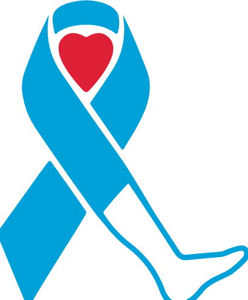

Welcome to the SALSAL Board.
Seven short steps take you from newly elected to ready to serve. Work through them in order, and check each one off as you go.
Welcome and our mission
In short: Get to know what the foundation does and why your seat on the board matters.
Thank you for giving your time and expertise to limb preservation. Most amputations are preventable with the right care at the right time, and this board exists to make that care the standard.
To reduce the number of lower extremity amputations and improve the quality of life of citizens afflicted with wounds and complications from diabetes and peripheral arterial disease.
SALSAL at a glance
- Who we are
- The Save a Leg, Save a Life Foundation, a national 501(c)(3) nonprofit. Federal Tax ID 32-0467696.
- Community screenings
- Free screening and education events that catch peripheral arterial disease and diabetes-related wounds early.
- Provider education
- Webinars and resources for clinicians, plus the Harold L. Johnson Memorial Scholarship for wound care certification.
- Patient assistance
- Walking boots, compression socks, and diabetic shoes for patients protecting a healing limb.
- Campaigns and advocacy
- Time Out Before Amputation® (TOBA), the White Sock Campaign™, and policy work to change how amputation decisions are made.
Your role and responsibilities
In short: Learn what board members do, then pick the working group where you want to contribute.
What board members do
- Governance and oversight
- Guide the foundation's mission, strategy, and financial health.
- Fiduciary duty
- Act in SALSAL's best interest with care, loyalty, and good faith.
- Meetings and votes
- Prepare for and attend board meetings, and respond to e-votes on time.
- Working groups
- Put your skills to work in a working group, such as TOBA, community screening, or education.
- Conflict of interest
- Sign the yearly statement and step back from any decision where you have a conflict.
- Supporter standing
- Keep your SALSAL Supporter membership current for as long as you serve. See Step 3.
- Ambassadorship
- Represent SALSAL professionally and bring its programs to your community.
Your term length and time commitment come from the executive board. If you have not received them yet, ask at info@thesalsal.org.
Choose your working group
Become a SALSAL Supporter
In short: Every board member must be a current SALSAL Supporter. Join online in about two minutes.
Supporters fund the screenings, scholarships, and patient assistance this board oversees. When directors are Supporters themselves, the community sees leaders who stand behind the mission, and you stay a member in good standing for your yearly conflict of interest statement.
Supporter membership
You receive a full-color SALSAL certificate and an enamel lapel pin to wear at meetings and events. Please allow 6 to 8 weeks for delivery.
How it works
- 1. Join
- Use the button above. Checkout is handled securely by Stripe.
- 2. Keep your receipt
- Stripe emails it to you. It is your proof of Supporter standing.
- 3. Renew each year
- Your Supporter membership needs to stay current for as long as you serve on the board.
Already a Supporter this year? You are set. Check the boxes below and move on.
Governance documents and forms
In short: Sign your yearly conflict of interest statement, and know where the expense form lives.
What to expect
- Conflict of interest statement
- Every director and officer signs it once a year. It asks whether you are a member in good standing, so finish Step 3 first. The SALSAL team emails you the signing link for the current year.
- Bylaws and policies
- The SALSAL team sends these with your welcome email. Ask for a copy any time at info@thesalsal.org.
- Board e-votes
- Between meetings, votes arrive by email as a short form. Please respond by the date shown.
Board tools
Expense reimbursement form
Use this when you have an approved board expense. Attach receipts for every item.
Send your bio and headshot
In short: Email us a short bio and a clear portrait photo so we can add you to the board page.
What to include
- Name and credentials
- Exactly as you would like them shown on the website.
- Short bio
- About 75 to 120 words on your role, your expertise, and why limb preservation matters to you.
- Headshot
- A well-lit portrait, taller than it is wide, at least 1000 pixels wide. Leave some space above your head.
Send to info@thesalsal.org with the photo attached.
Meeting calendar and key contacts
In short: Accept your board meeting invites and save the foundation's contact details.
- Board meetings
- Dates arrive as calendar invites from the SALSAL team. Accept them so the meetings hold on your calendar.
- info@thesalsal.org
- Phone
- +1 813-445-3857
- Mailing address
- 4403 5th Ave NE, Bradenton, FL 34208
Stay connected with SALSAL
In short: Follow SALSAL on social media and join the newsletter. Sharing our posts is one of the easiest ways to help.
Follow SALSAL
Join the newsletter
Common questions
Do I have to be a Supporter to serve on the board?
Yes. Every board member keeps a current SALSAL Supporter membership. It is $49 per year, and you can join in Step 3.
I am already a Supporter. Do I need to join again?
No. If your membership is current, check the box in Step 3 and keep going. Renew it each year while you serve.
Will my progress be here when I come back?
Yes, as long as you return on the same device and browser. Your checkmarks are stored on your device only.
Who do I contact with questions?
Email info@thesalsal.org or call +1 813-445-3857.
Need a hand?
The SALSAL team is glad to help with any step. Write to info@thesalsal.org.
The Save a Leg, Save a Life Foundation is a 501(c)(3) nonprofit organization. Federal Tax ID 32-0467696. Florida Solicitation Registration CH47375. This page is for SALSAL board members.